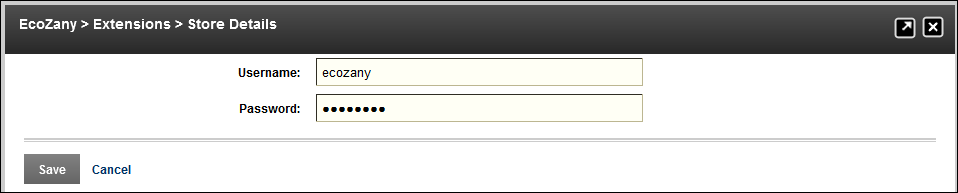

Fetching List of Purchased Extensions
How to fetch the list of extensions which you have purchased from DotNetNuke Store (http://store.dnnsoftware.com/) and display them in the Extensions module. This provides you with a simple way to install your extensions on this or other DNN installations.
- Navigate to Host >
 Extensions.
Extensions.
- Select the Purchased Extensions tab.
- Optional. To enter or update your store information, click the Enter Store Credentials or the Update Store Credentials button.
- In the Username text box, enter the username for your DotNetNuke Store (http://store.dnnsoftware.com/) account.
- In the Password text box, enter the password for your DotNetNuke Store account.
- Click the Save button.

- Click the Fetch List of Extensions button. This displays a list of your purchased extensions.

- To deploy an extension to this DNN installation, click the Deploy button that is only displayed for extensions that can be deployed to this version of DNN. See "Using the Install Extension Wizard"